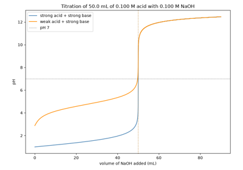
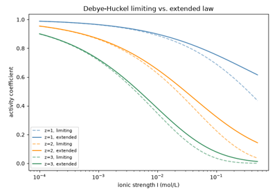

Breakthroughs in Solution Chemistry#
“We must trust to nothing but facts: these are presented to us by Nature, and cannot deceive.” – Antoine Lavoisier, Traite Elementaire de Chimie, 1789
Long before anyone could measure a hydrogen-ion concentration directly,
chemists already knew that dissolving an acid, a base, or a salt in
water produces behavior no simple mixture of neutral molecules could
explain. The century-long project of chemistrykit.solutions –
from the first systematic volumetric assays, through the recognition
that dissolved electrolytes are actually free ions, to the exact
electrostatic theory of why even “fully dissociated” ions do not behave
quite ideally – turned solution chemistry from a collection of
empirical recipes into a body of quantitative, predictive law. This
chronology traces that thread, with a pointer to the corresponding
implementation in this package at each stop.
1832 – 1855 – Gay-Lussac, Mohr, and the Birth of Volumetric Titration#
Before any equilibrium constant could be measured, chemists needed a reliable way to determine how much of a dissolved substance a solution actually contained, without resorting to the slow, laborious business of precipitating and weighing it. Joseph-Louis Gay-Lussac pioneered volumetric analysis for exactly this purpose in the early 1830s, devising a method for assaying the silver content of coinage and bullion by titrating a dissolved sample against a standardized sodium chloride solution and watching for the first faint, permanent turbidity as the endpoint – a large improvement in speed and reproducibility over the mint’s traditional cupellation assay, described in his 1832 manual on the wet assay of silver. Volumetric methods were initially met with real skepticism from chemists trained to trust nothing but a weighed precipitate, and it took two more decades for the practice to mature into a fully systematic analytical discipline. That systematization is largely the work of Karl Friedrich Mohr, whose 1855 textbook on titrimetric methods introduced standardized burette and pipette designs (the “Mohr pipette” among them) and codified indicator-based endpoint detection – including the “Mohr method” for chloride, using potassium chromate as an indicator against silver nitrate – that put volumetric analysis on the same rigorous footing as gravimetric analysis, and made “titration” a routine laboratory word rather than a specialist’s trick.
Implementation: chemistrykit.solutions.core.base_system.Titration
and its shared curve()/
find_equivalence_point()
machinery are the modern, numerical descendants of exactly what Gay-Lussac
and Mohr did by eye and burette: an equivalence point located as the
steepest-ascent inflection of a titration curve, the mathematical
analogue of the sharp color-change endpoint a 19th-century analyst
watched for;
chemistrykit.solutions.systems.titration.StrongAcidStrongBaseTitration
computes the curve itself from an exact charge-balance equation.
References: J. L. Gay-Lussac, Instruction sur l’essai des matieres d’argent par la voie humide (Paris, 1832); K. F. Mohr, Lehrbuch der chemisch-analytischen Titrirmethode (Braunschweig: Vieweg, 1855).

Strong/strong and weak-acid/strong-base titration curves
1864 – Guldberg and Waage’s Law of Mass Action#
Cato Maximilian Guldberg, a mathematician, and Peter Waage, a chemist – the two were also brothers-in-law – proposed in 1864 that a reaction’s rate, and the position of its eventual equilibrium, depends not on the total amount of each reactant present but on its “active mass,” essentially its concentration, raised to a power set by the reaction’s own stoichiometry. Published first in Norwegian in the proceedings of the Videnskabs-Selskabet i Christiania (Oslo), the law of mass action went largely unnoticed outside Scandinavia for over a decade, reaching a wide chemical audience only after a French restatement in 1867 and a more complete, and more widely read, German one in 1879. Every equilibrium constant used anywhere in this subpackage’s chemistry – an acid’s \(K_a\), a base’s \(K_b\), a sparingly soluble salt’s \(K_{sp}\) – is a direct instance of Guldberg and Waage’s mass-action law applied to one specific reaction; it is the single mathematical idea every other entry in this chronology is built on.
Implementation:
equilibrium_constant
and the exact cubic charge-balance equations solved in
chemistrykit.solutions.systems.acid_base are direct statements of
the mass-action law for a weak acid or base equilibrium, and
ksp_from_molar_solubility()
is the same law applied to a solid-liquid solubility equilibrium instead.
References: C. M. Guldberg and P. Waage, “Studies Concerning Affinity,” Forhandlinger: Videnskabs-Selskabet i Christiania (1864); English translation and commentary in H. I. Abrash, “Studies Concerning Affinity,” J. Chem. Educ. 63(12), 1044-1047 (1986).

Strong/strong and weak-acid/strong-base titration curves
1884 – Le Chatelier’s Principle and the Common-Ion Effect#
Henry Louis Le Chatelier, studying how industrial chemical equilibria respond to changes in temperature, pressure, and composition, proposed in 1884 a strikingly general qualitative rule: a system at equilibrium, disturbed by a change in one of the conditions that determines it, shifts in whichever direction partially undoes that change. Le Chatelier’s principle makes no numerical prediction on its own – it is a qualitative shortcut, not a law in the sense Guldberg and Waage’s mass-action law is – but it tells a chemist which direction to expect before doing any arithmetic at all, and one of its cleanest quantitative illustrations is the common-ion effect: adding a salt that shares an ion with a sparingly soluble compound already at equilibrium suppresses that compound’s solubility, exactly as Le Chatelier’s rule predicts (the system shifts to consume the added ion by precipitating more solid), and exactly as the mass-action expression for \(K_{sp}\), worked through in full, quantifies precisely.
Implementation:
molar_solubility_with_common_ion()
solves the exact common-ion polynomial for any salt stoichiometry (not
merely the textbook 1:1 quadratic special case), and directly demonstrates
the suppression Le Chatelier’s principle predicts: AgCl’s molar
solubility drops by orders of magnitude as independently sourced
\(\text{Cl}^-\) is added, compared against the common-ion-free
solubility from
molar_solubility_from_ksp().
References: H. Le Chatelier, “Sur un enonce general des lois des equilibres chimiques,” Comptes Rendus de l’Academie des Sciences 99, 786-789 (1884) (page range as commonly cited in secondary/textbook literature; not independently verified against the original).
1884 – 1887 – Arrhenius and the Theory of Electrolytic Dissociation#
Svante Arrhenius’s 1884 doctoral dissertation at Uppsala University proposed that salts, acids, and bases dissolved in water spontaneously split, at least in part, into oppositely charged ions – even with no electric current applied – and that it is these free ions, not intact neutral molecules, that carry current through the solution and are responsible for its distinctive chemical behavior. The idea was so far outside the chemical orthodoxy of the day that Arrhenius’s examining committee very nearly failed the dissertation, awarding it only a fourth-class grade (non sine laude approbatur, barely a pass), with several of his own examiners openly unconvinced that a stable, neutral salt would fall apart on its own. Arrhenius mailed copies of the work to leading physical chemists across Europe regardless, and found decisive allies in Wilhelm Ostwald and Jacobus van ‘t Hoff, both of whom recognized that electrolytic dissociation resolved outstanding puzzles in their own work – Ostwald’s dilution-law measurements (below), and van ‘t Hoff’s anomalous osmotic-pressure and freezing-point data for electrolyte solutions, which only matched the ideal-solution laws once the “extra” dissociated particles were counted. Arrhenius generalized the theory in a landmark 1887 paper, and in 1903 – not two decades after nearly failing his own oral defense over it – received the Nobel Prize in Chemistry for it.
Implementation:
chemistrykit.solutions.core.base_system.WeakElectrolyte is, in
substance, Arrhenius’s dissociation theory made computational: it treats
a weak acid or base as partially, not fully, dissociated into its ions
at equilibrium, and
percent_dissociation()
reports exactly the dissociated fraction whose very existence Arrhenius’s
own examiners doubted.
References: S. Arrhenius, “Recherches sur la conductibilite galvanique des electrolytes,” doctoral dissertation, Uppsala University (1884); S. Arrhenius, “Ueber die Dissociation der in Wasser gelosten Stoffe,” Zeitschrift fur Physikalische Chemie 1, 631-648 (1887).
1888 – Ostwald’s Dilution Law#
Wilhelm Ostwald applied Arrhenius’s brand-new dissociation theory together with Guldberg and Waage’s mass-action law to a weak electrolyte’s own equilibrium, deriving what became known as Ostwald’s dilution law: as a weak acid or base is progressively diluted, the fraction of it that dissociates rises, even as the absolute concentration of the dissociated ions themselves eventually falls. It was one of the first sharply quantitative, independently testable predictions to come out of Arrhenius’s theory, and Ostwald’s own painstaking conductivity measurements across a wide concentration range for dozens of weak acids confirmed it well enough to become one of the theory’s strongest early pieces of experimental support – exactly the kind of independent verification the theory badly needed, given the reception described above.
Implementation:
chemistrykit.solutions.systems.acid_base.WeakAcid reproduces
Ostwald’s dilution law directly: evaluating
percent_dissociation()
at fixed \(K_a\) across a range of total concentrations \(C_a\)
reproduces the characteristic rise in dissociated fraction with dilution,
computed here from the exact cubic charge-balance solution rather than
Ostwald’s own simplified square-root approximation.
References: W. Ostwald, “Ueber die Dissociationstheorie fur Elektrolyte,” Zeitschrift fur Physikalische Chemie 2, 270-283 (1888).
The Ostwald dilution law and buffer design
1889 – Nernst and the Solubility-Product Principle#
Walther Nernst, one of the architects – alongside Ostwald, van ‘t Hoff, and Arrhenius – of the new physical chemistry, applied the mass-action law to the equilibrium between a solid salt and its dissolved ions, and showed that the product of the ionic concentrations at saturation, each raised to its own stoichiometric coefficient, is a constant at fixed temperature – regardless of whether those ions came entirely from the dissolving salt itself or partly from some other, independently added source. That last clause was the genuinely new and practically useful consequence: it meant a salt’s solubility could be suppressed, quantitatively and predictably, simply by adding a soluble compound sharing one of its ions – the common-ion effect Le Chatelier’s principle predicts only qualitatively (see above), now reduced to an exact algebraic relationship.
Implementation:
ksp_from_molar_solubility()
and its inverse
molar_solubility_from_ksp()
implement exactly Nernst’s constant-product relation for a general
\(M_pX_q\) stoichiometry.
References: W. Nernst, “Ueber die Loslichkeit eines Salzes in Gegenwart eines zweiten Salzes mit gleichem Ion,” Zeitschrift fur Physikalische Chemie 4, 372-383 (1889) (page range as commonly cited in secondary/textbook accounts of the solubility-product concept’s origin; not independently verified against the original).
1908 – 1917 – Henderson and Hasselbalch: The Buffer Equation#
Lawrence Henderson, a Harvard physiologist rather than a chemist by training, was studying how blood maintains a nearly constant pH despite the continual metabolic production of acid, and in 1908 derived the algebraic relationship linking a weak acid’s dissociation constant, the concentrations of the acid and its conjugate base, and the resulting hydrogen-ion concentration – in effect rediscovering, in a physiological context, the buffer relationship implicit in any weak-acid equilibrium. Henderson’s own 1908 formulation was written directly in terms of concentrations, with no logarithm in sight. It was the Danish biochemist Karl Albert Hasselbalch, working on the same blood-buffering problem roughly a decade later, who recast Henderson’s relationship in the logarithmic pH/\(pK_a\) form now universally taught – a reformulation that made far more practical sense once Sorensen’s newly introduced pH scale (below, itself barely a few years old at the time) gave chemists a logarithmic quantity to measure in the first place.
Implementation:
henderson_hasselbalch_ph()
implements exactly Hasselbalch’s logarithmic form, and
chemistrykit.solutions.systems.acid_base.Buffer – together with
its from_target_ph()
constructor, which inverts the equation to design a buffer for a target
pH from a fixed total concentration – is built directly on top of it.
References: L. J. Henderson, “Concerning the relationship between the strength of acids and their capacity to preserve neutrality,” Am. J. Physiol. 21, 173-179 (1908); K. A. Hasselbalch, “Die Berechnung der Wasserstoffzahl des Blutes aus der freien und gebundenen Kohlensaure desselben,” Biochem. Z. 78, 112-144 (1917).
The Ostwald dilution law and buffer design
1909 – Sorensen and the pH Scale#
Soren Peder Lauritz Sorensen, director of the chemistry laboratory at the Carlsberg brewery in Copenhagen, needed a practical way to express and control the extremely small – and, for enzyme activity in brewing, extremely consequential – hydrogen-ion concentrations he was measuring. In 1909 he introduced the notation “pH,” defined as the negative base-10 logarithm of the hydrogen-ion concentration; accounts differ on whether Sorensen himself intended it to abbreviate the French puissance d’hydrogene (“power of hydrogen”) or the Latin pondus hydrogenii, but the logarithmic idea itself has been untouched since. The scale converted an unwieldy number like 0.0000001 mol/L into the simple, comparable value 7 – and the fact that pH was invented at an industrial brewing laboratory rather than a university is itself a reminder that it solved a very practical measurement problem, not an abstract theoretical one. Sorensen’s own operational definition, based on the electromotive force of a hydrogen electrode, differs subtly from the modern activity-based IUPAC definition, but this distinction matters only well beyond the precision this package’s exact concentration-based equilibrium models target.
Implementation:
ph_from_h() and its inverse
h_from_ph() implement
exactly Sorensen’s negative-log-concentration definition
(poh_from_oh() and
oh_from_poh() do the same
for hydroxide); every pH value computed anywhere else in this
subpackage – pH(),
every curve(),
the Henderson-Hasselbalch buffer above – is built on this one definition.
References: S. P. L. Sorensen, “Ueber die Messung und die Bedeutung der Wasserstoffionenkonzentration bei enzymatischen Prozessen,” Biochem. Z. 21, 131-200 (1909) (page range as commonly cited in secondary literature; not independently verified against the original).
Strong/strong and weak-acid/strong-base titration curves
1923 – Bronsted and Lowry: The Proton-Transfer Theory of Acids and Bases#
Working independently and publishing within months of one another in 1923, the Danish chemist Johannes Nicolaus Bronsted and the English chemist Thomas Martin Lowry each proposed the same generalization of what “acid” and “base” mean: an acid is any species that can donate a proton (\(H^+\)), and a base is any species that can accept one, with every acid paired to a specific conjugate base formed by that proton’s loss. This subsumed Arrhenius’s older, narrower definition – an acid as specifically a substance that releases \(H^+\) in water – as a special case, and, crucially for the buffer chemistry above, made the “conjugate acid/base pair” at the center of the Henderson-Hasselbalch equation a formal theoretical concept rather than an informal description. Neither Bronsted nor Lowry ever established clear priority over the other, and the theory is universally credited to both names jointly rather than to whichever paper happened to appear first.
Implementation:
chemistrykit.solutions.systems.acid_base.WeakAcid and
WeakBase model exactly
a Bronsted-Lowry conjugate pair (\(HA/A^-\) and \(B/BH^+\)
respectively), and the paired acid_conc/base_conc attributes of
Buffer are precisely
the conjugate-pair structure the Bronsted-Lowry theory formalizes.
References: J. N. Bronsted, “Einige Bemerkungen ueber den Begriff der Sauren und Basen,” Recueil des Travaux Chimiques des Pays-Bas 42, 718-728 (1923); T. M. Lowry, “The uniqueness of hydrogen,” J. Chem. Soc., Trans. 123, 1897-1902 (1923) (Lowry’s exact place and page of publication are given inconsistently across secondary sources; the citation given here follows the most commonly repeated version and has not been independently verified against the original).
The Ostwald dilution law and buffer design
1923 – Debye and Huckel: The Limiting Law of Ionic Activity#
Peter Debye and Erich Huckel tackled a puzzle that had dogged the Arrhenius picture from early on: even a “fully dissociated” strong electrolyte like NaCl behaves, in careful conductivity and freezing-point measurements, as if it were slightly less dissociated than 100 percent – an apparent deficit that grows with concentration. Debye and Huckel showed the ions themselves are not the problem; the assumption that they behave as an ideal, non-interacting gas of point charges is. Every ion in solution is, on average, surrounded by a diffuse “atmosphere” of opposite-charge neighbors – denser the higher the solution’s total ionic strength – and this electrostatic screening lowers each ion’s effective chemical activity below its literal concentration. Their limiting law gives the resulting activity coefficient in closed form for the low-concentration regime, where the ionic atmosphere is well described by linearized electrostatics; at higher ionic strength the finite size of the ions themselves becomes important and the limiting law systematically over-corrects, which is exactly why an extended form (below) was needed within just a few years.
Implementation:
ionic_strength() computes
the ionic strength \(I\) central to the whole theory, and
activity_coefficient_debye_huckel_limiting()
implements the limiting law itself, using the literature value
DEBYE_HUCKEL_A_25C for
aqueous solutions at 25 degC.
References: P. Debye and E. Huckel, “Zur Theorie der Elektrolyte,” Physikalische Zeitschrift 24, 185-206 (1923).

Debye-Huckel limiting vs. extended activity-coefficient laws
1926 – Guntelberg’s Extended Activity-Coefficient Approximation#
Within a few years of the Debye-Huckel limiting law’s publication, it became clear that it only held up to roughly \(I \approx 0.01\) mol/L – well below many solutions of practical interest – because the underlying theory treats ions as point charges, ignoring that a real ion has a finite size setting a minimum possible approach distance to its neighbors. Erik Guntelberg, working at the same Carlsberg Laboratory in Copenhagen where Sorensen had introduced the pH scale a decade and a half earlier, proposed an extended activity-coefficient equation adding a single finite-ion-size correction term to the denominator, and further showed that setting this size parameter to one common value – rather than requiring an ion-specific radius that often was not known anyway – already extends the equation’s useful range by roughly an order of magnitude in ionic strength: the pragmatic simplification now generally called the Guntelberg approximation.
Implementation:
activity_coefficient_debye_huckel_extended()
implements exactly this extended form, with its Ba parameter
defaulting to 1.0 – the Guntelberg approximation’s own simplification –
and reduces to the plain limiting law as \(I \to 0\), exactly as it
must.
References: E. Guntelberg, “Untersuchungen ueber Ioneninteraktion,” Zeitschrift fur Physikalische Chemie 123, 199-247 (1926) (page range as commonly cited in secondary/textbook literature on activity-coefficient theory; not independently verified against the original).
Debye-Huckel limiting vs. extended activity-coefficient laws